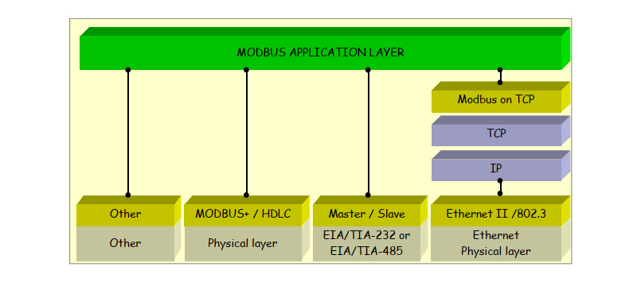
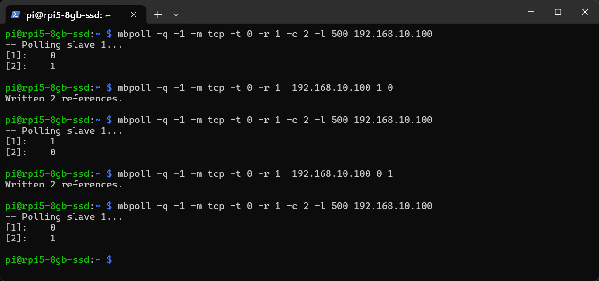
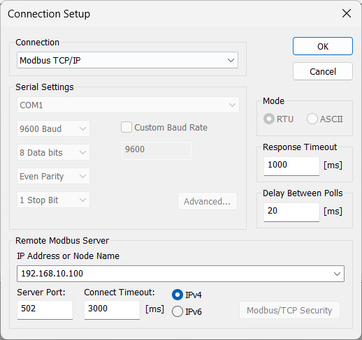
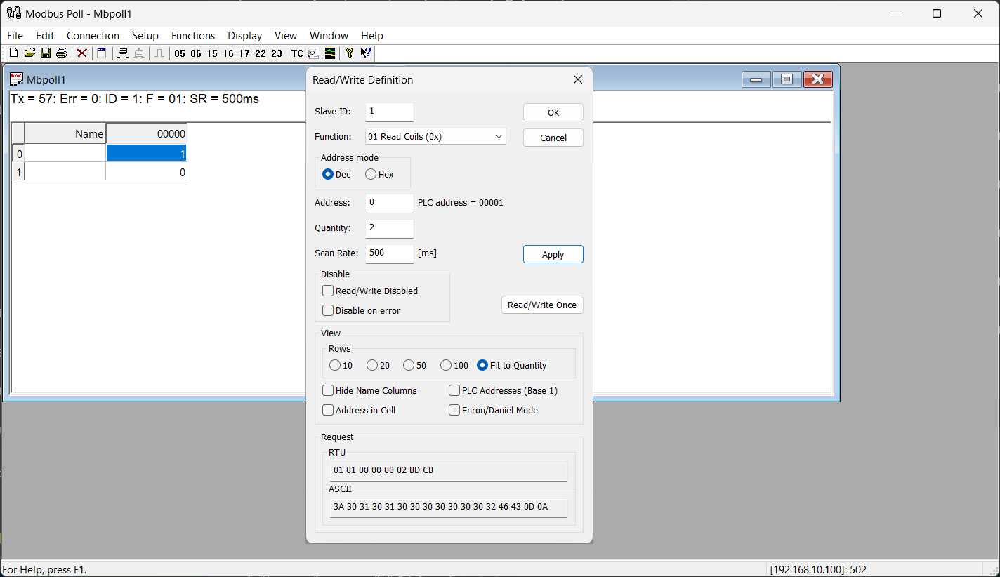
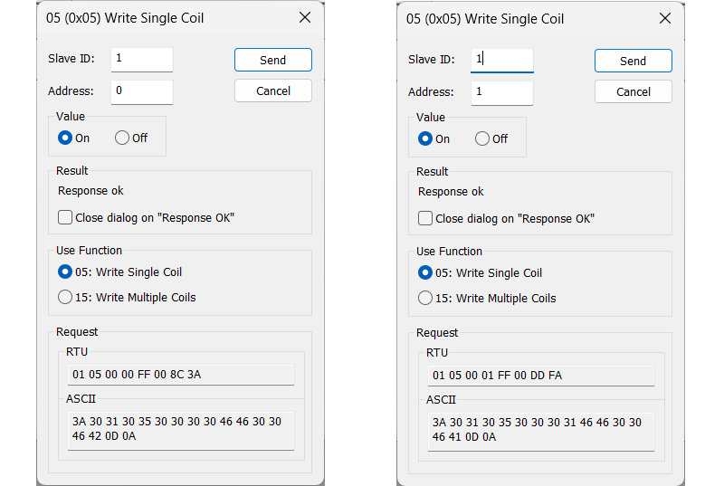

Arduino Uno + W5100 Ethernet Shield: Network Programming (ตอนที่ 3)#
Keywords: Arduino Uno, Arduino Ethernet Shield, Network Programming, Industrial Automation, Modbus TCP / RTU
▷ Arduino Uno + W5100 Ethernet Shield for Industrial Automation#
บอร์ด Arduino ยุคแรก ๆ เช่น Arduino Uno และ Arduino Mega 2560 ไม่ได้ถูกออกแบบมา เพื่อใช้งานในระดับอุตสาหกรรมโดยตรง เช่น ระบบควบคุมอัตโนมัติในโรงงาน (Industrial Automation) เนื่องจากมีข้อจำกัดทางฮาร์ดแวร์หลายด้าน ได้แก่
- ใช้ไมโครคอนโทรลเลอร์สถาปัตยกรรม 8-bit AVR ซึ่งมีประสิทธิภาพการประมวลผลจำกัด
- มีหน่วยความจำ (RAM / Flash) ค่อนข้างน้อย เมื่อเทียบกับงานระบบอุตสาหกรรมสมัยใหม่
- ไม่มีอินเทอร์เฟซอุตสาหกรรมโดยตรง เช่น CAN bus, Modbus, RS-485 (ต้องใช้โมดูลเสริม)
- การเชื่อมต่อเครือข่ายต้องพึ่งพาอุปกรณ์ภายนอก เช่น Ethernet Shield (W5100/W5500) หรือ โมดูล Wi-Fi
ในทางปฏิบัติ หากต้องการนำบอร์ด Arduino Uno + Shields มาใช้เป็นอุปกรณ์ทดลองและฝึกเขียนโปรแกรม เพื่อประยุกต์ใช้งานในด้าน "ระบบควบคุมอัตโนมัติในโรงงาน" (Industrial Automation) ก็สามารถทำได้เช่นกัน
โดยเฉพาะการเรียนรู้การสื่อสารข้อมูลระหว่างอุปกรณ์ผ่านระบบเครือข่าย เช่น
- การเชื่อมต่อกับ PLC (Programmable Logic Controller)
- การทำงานร่วมกับ Industrial IoT Embedded Controllers
- การสื่อสารกับอุปกรณ์ Industrial HMI (Human Machine Interface)
ตัวอย่างโปรโตคอลที่สามารถนำมาทดลองใช้งานร่วมกันได้ ได้แก่
- Modbus TCP / Modbus RTU
- TCP/IP Socket Communication
- HTTP REST API
- MQTT (Message Queuing Telemetry Transport)
แม้ว่า Arduino Uno จะไม่ใช่อุปกรณ์ระดับอุตสาหกรรมโดยตรง แต่ก็สามารถใช้เป็น "แพลตฟอร์มสำหรับการเรียนรู้และการสร้างต้นแบบ" ได้เป็นอย่างดี แต่ก็ต้องคำนึงถึงข้อจำกัดต่าง ๆ ด้วย หากจะนำไปใช้งานจริง เช่น
- ความเสถียรของระบบ (Reliability)
- ความทนทานต่อสภาพแวดล้อม (Industrial Environment)
- ความปลอดภัยของการสื่อสาร (Security)
- มาตรฐานอุตสาหกรรม (Industrial Standards Compliance)
▷ Modbus RTU & TCP#
รูปแบบการเชื่อมต่อระหว่างอุปกรณ์ในระบบเครือข่ายสำหรับงาน Industrial Automation ที่พบเห็นได้บ่อย คือ โปรโตคอล Modbus แบ่งเป็น 2 ตัวเลือกหลัก ที่นิยมใช้งาน ได้แก่
- Modbus RTU (RS-485)
- Modbus TCP (Ethernet / TCP-IP)

รูป: โครงสร้างสถาปัตยกรรมของ Modbus Protocol และแสดงให้เห็นว่า Modbus สามารถทำงานบนหลายชั้นและหลายรูปแบบการสื่อสารได้ เช่น RS-232 / RS-485 และ Ethernet / Network (Source: Wikipedia)
Modbus RTU เป็นโปรโตคอลการสื่อสารแบบอนุกรม (Serial Communication) ที่นิยมใช้งานร่วมกับมาตรฐานทางไฟฟ้า RS-485 และลักษณะสำคัญ ดังนี้
- เป็นระบบสื่อสารแบบ Master–Slave
- รองรับการเชื่อมต่อหลายอุปกรณ์บนบัสเดียว (Multi-drop)
- ใช้สายสัญญาณแบบ Differential Signaling ทำให้ทนต่อสัญญาณรบกวนได้ดี และต้องใช้ร่วมกับวงจร RS485 Transceiver
- นิยมใช้ในการเชื่อมต่อกับอุปกรณ์ Sensors & Actuators
- เหมาะกับงานระยะไกลระดับโรงงาน แต่ก็มีความเร็วในการสื่อสารข้อมูล ค่อนข้างต่ำเมื่อเทียบกับ Ethernet
Modbus TCP เป็นการนำโปรโตคอล Modbus มาทำงานบนเครือข่าย TCP/IP และลักษณะสำคัญ ดังนี้
- ใช้โครงสร้างแบบ Client–Server
- ทำงานบนเครือข่าย Ethernet (LAN / Industrial LAN)
- ใช้พอร์ตมาตรฐาน TCP โดยทั่วไปคือ
502(default) - มีความเร็วสูงกว่า Modbus RTU
โปรโตคอล Modbus TCP เป็นการนำมาตรฐาน Modbus มาทำงานบนระบบเครือข่าย TCP/IP (Ethernet) ซึ่งทำให้สามารถเชื่อมต่ออุปกรณ์ในระบบควบคุมอุตสาหกรรมได้สะดวกและยืดหยุ่นมากขึ้น โดยโครงสร้างการสื่อสาร จะถูกแบ่งบทบาทของอุปกรณ์ออกเป็น 2 ฝั่งหลัก ได้แก่
- Modbus TCP Server อุปกรณ์ที่ให้บริการข้อมูล และคอยรับการเชื่อมต่อเข้ามา
- Modbus TCP Client อุกรณ์ที่ขอใช้บริการ เริ่มต้นการสื่อสารข้อมูลในระบบเครือข่าย ใช้สำหรับอ่านหรือเขียนข้อมูลไปยังอุปกรณ์ปลายทาง
ในมุมมองของการเขียนโปรแกรมตามรูปแบบของ Modbus Protocol อุปกรณ์ฝั่ง Server (Modbus Slave) จะต้องมีการกำหนดชุดข้อมูลภายใน สำหรับให้บริการแก่ Client ชุดข้อมูลดังกล่าวถูกจัดเก็บในรูปแบบของ Register Map ซึ่งเป็นโครงสร้างหน่วยความจำภายในที่ถูกแบ่งออกเป็นหลายประเภทตามลักษณะการใช้งานของข้อมูล
หากจะทดลองเชื่อมต่อกับ Modbus TCP Server ก็สามารถใช้ซอฟต์แวร์ Modbus Poll (Freeware, Windows 32-bit / 64-bit / Arm 64-bit) ได้
▷ Modbus Registers#
โดยทั่วไป Modbus จำแนกรีจิสเตอร์ออกเป็น 4 กลุ่มหลัก ได้แก่
- Coils (
0xxxx)- เป็นข้อมูลแบบบิต (1-bit) ใช้สำหรับสถานะ ON / OFF เช่น LED Lamp และ Relay เป็นต้น
- สามารถอ่านและเขียนได้ (Read/Write)
- Discrete Inputs (
1xxxx)- เป็นข้อมูลแบบ 1-bit เช่นกัน แต่ใช้สำหรับสถานะอินพุตเท่านั้น (Read-only)
- ใช้อ่านค่าสถานะของอินพุต จากปุ่มกด Push Button, Limit Switch หรือสถานะลอจิกของอุปกรณ์ Sensor
- Input Registers (
3xxxx)- เป็นข้อมูลแบบ 16-bit (unsigned int)
- ใช้สำหรับข้อมูลแบบอ่านอย่างเดียว (Read-only) เช่น ค่า Analog เป็นต้น
- Holding Registers (
4xxxx)- เป็นข้อมูลแบบ 16-bit และสามารถอ่านและเขียนได้ (Read/Write)
หากข้อมูลจริงมีขนาดมากกว่า 16-bit สามารถแบ่งเก็บโดยใช้หลายรีจิสเตอร์ต่อเนื่องกันได้ โดยจะอ้างอิงผ่าน Register Address ที่เรียงต่อกัน (Sequential Addressing) เช่น
- 32-bit float: ใช้รีจิสเตอร์ 2 ตัว
- 64-bit integer: ใช้รีจิสเตอร์ 4 ตัว
ในฝั่ง Modbus TCP Server จะทำหน้าที่
- สร้าง Register Map ภายในหน่วยความจำ
- อัปเดตค่าจากฮาร์ดแวร์จริงเป็นระยะ ๆ
- รอรับคำสั่งจาก Client
- ประมวลผลคำขอในการอ่านหรือเขียนข้อมูล (Read / Write Register)
- ส่งค่ากลับตาม Register Address ที่ Client ต้องการ
▷ โครงสร้างของ Modbus TCP Packet#
ในการสื่อสารระหว่าง Modbus TCP Client กับ Server จะมีการส่งข้อมูลในรูปแบบที่เรียกว่า Modbus TCP Packet (Modbus Application Data Unit - ADU) ซึ่งประกอบด้วยโครงสร้างข้อมูลที่ถูกกำหนดอย่างเป็นมาตรฐาน เพื่อให้ทั้งสองฝั่งเข้าใจตรงกัน
โดยทั่วไปแพ็กเกต Modbus TCP จะประกอบด้วย 2 ส่วนหลัก
- MBAP Header (Modbus Application Protocol Header)
เป็นส่วนหัวของแพ็กเกต ใช้สำหรับควบคุมการสื่อสารผ่าน TCP/IP และประกอบด้วย
- Transaction ID ใช้ระบุหมายเลขของคำขอ (Request ID)
- Protocol ID (
0x0000สำหรับ Modbus) - Data Length ซึ่งระบุความยาวของข้อมูล
- Unit ID ใช้ระบุอุปกรณ์ปลายทาง (ถ้ามี Gateway หรือ Bridge ไปยัง Modbus RTU)
- PDU (Protocol Data Unit) เป็นส่วนที่ใช้กำหนดคำสั่งของ Modbus ประกอบด้วย
- Function Code (FC) ระบุประเภทคำสั่ง
- Register Address (Start Address) ตำแหน่งหรือแอดเดรสเริ่มต้นของข้อมูล (รีจิสเตอร์)
- Data Length / Quantity จำนวนข้อมูล (รีจิสเตอร์) ที่ต้องการอ่านหรือเขียน
- Data Payload ข้อมูล (เฉพาะกรณี Write Operation)
Function Code ใช้ระบุประเภทของคำสั่งที่ต้องการให้ Server ทำงาน เช่น
0x01: Read Coils (อ่านรีจิสเตอร์ หลายตัว ได้ตาม Quantity)0x02: Read Discrete Inputs (อ่านอินพุตแบบบิตได้หลายตัว ตามค่า Quantity)0x03: Read Holding Registers (อ่านรีจิสเตอร์แบบ 16-bit ได้หลายตัว ตามค่า Quantity)0x04: Read Input Registers (อ่านรีจิสเตอร์แบบ 16-bit ได้หลายตัว ตามค่า Quantity)0x05: Write Single Coil (เขียนบิตสถานะ 1 ตัว)0x06: Write Single Register (เขียนรีจิสเตอร์ 16-bit 1 ตัว)0x10: Write Multiple Registers (เขียนรีจิสเตอร์ 16-bit หลายตัวต่อเนื่อง)0x17: Read/Write Multiple Registers (อ่าน-เขียนรีจิสเตอร์ 16-bit หลายตัวต่อเนื่อง)
ข้อสังเกต
- ยกตัวอย่าง Holding Register อ้างอิงแบบมาตรฐานคือ
40001แต่ในแพ็กเกตจริง จะใช้ค่า Register Address Offset เริ่มต้นที่0 - เนื่องจาก Modbus TCP ใช้ TCP/IP Layer ในการสื่อสารข้อมูล ซึ่งมีการตรวจสอบความถูกต้องของข้อมูลอยู่แล้ว ดังนั้นจึงไม่ต้องมีส่วนที่เป็น CRC (Cyclic Redundancy Check) / Error Checking Checksum ในขณะที่ Modbus RS485 / RTU จะต้องมีส่วนนี้ด้วย
▷ Arduino Uno + W5100 Ethernet Shield - Modbus TCP#
เมื่อใช้ Arduino Uno + W5100 Ethernet Shield สามารถนำมาใช้งานเป็น Modbus TCP Client หรือ Server ได้
ในส่วนของการเขียนโค้ด ก็มีไลบรารี สำหรับ Modbus TCP / RTU ให้เลือกใช้งาน เช่น
arduino-libraries/ArduinoModbusIndustrial-Shields/arduino-ModbusCMB27/ModbusRTUMasterCMB27/ModbusTCPSlaveepsilonrt/modbus-arduinoepsilonrt/modbus-ethernet
ไลบรารีแต่ละตัวมีความสามารถและฟีเจอร์แตกต่างกันไป แต่ข้อควรระวังสำคัญในการเลือกใช้งานคือ การใช้หน่วยความจำ SRAM ซึ่งมีอยู่อย่างจำกัด โดยเฉพาะบนบอร์ดอย่าง Arduino Uno
▷ ตัวอย่างโค้ด: Modbus TCP Server#
ตัวอย่างโค้ดต่อไปนี้สาธิตการสร้าง Modbus TCP Server โดยใช้ Arduino Uno + W5100 และใช้ไลบรารีต่อไปนี้ในการพัฒนาโปรแกรม
ไลบรารี <Ethernet.h> ใช้สำหรับจัดการการสื่อสารผ่านเครือข่าย Ethernet (TCP/IP)
ส่วน modbus-arduino และ modbus-ethernet ใช้สำหรับจัดการโปรโตคอล Modbus TCP
โดยช่วยลดความซับซ้อนในการจัดการแพ็กเกตและฟังก์ชันโค้ดของ Modbus
สำหรับไลบรารี modbus-arduino และ modbus-ethernet
โดยทั่วไปจะต้องดาวน์โหลดเป็นไฟล์ .ZIP จาก GitHub Repository
แล้วนำเข้าใน Arduino IDE ให้เรียบร้อยก่อนทำการ Build / Upload
นอกจากนั้นแล้ว จะต้องเปิดไฟล์ ModbusEthernet.h ของไลบรารี modbus-ethernet
เพื่อใช้งาน
#define TCP_KEEP_ALIVE
โดยปกติการสื่อสารแบบ Modbus TCP จะใช้การเชื่อมต่อแบบ TCP (Connection-oriented) ซึ่งมีการเปิดการเชื่อมต่อค้างไว้ระหว่าง Client กับ Server แต่ในทางปฏิบัติอาจเกิดปัญหา เช่น Client หลุดการเชื่อมต่อ
เมื่อเปิดใช้งาน TCP_KEEP_ALIVE Arduino จะมีการตรวจสอบเป็นระยะ ๆ
ว่า Client ยังออนไลน์อยู่หรือไม่ หาก Client หายไป จะปิด Connection (Socket) อัตโนมัติ
โค้ดตัวอย่างนี้สาธิตการใช้งาน Coil Registers จำนวน 2 รีจิสเตอร์ (เริ่มต้นที่ 0) และค่าของรีจิสเตอร์แต่ละตัว เชื่อมต่อกับขาเอาต์พุต D5 และ D6 ตามลำดับ
#include <SPI.h>
// Required libraries:
// 1) https://github.com/arduino-libraries/ethernet.git
#include <Ethernet.h>
// 2) https://github.com/epsilonrt/modbus-arduino
#include <Modbus.h>
// 3) https://github.com/epsilonrt/modbus-ethernet
#include <ModbusEthernet.h>
// Uncomment //#define TCP_KEEP_ALIVE in ModbusEthernet.h
#define INTERVAL_MS 100
const int numLEDs = 2;
const int ledPins[] = {5,6};
const uint16_t coilRegOffset = 0x00;
int lastValues[] = {0,0};
byte ip[] = { 192, 168, 10, 100 };
byte mac[] = { 0x02, 0xAA, 0xBB, 0xCC, 0xDD, 0x01 };
ModbusEthernet mb;
void setup() {
Serial.begin(115200);
Serial.println(F("\n\nUno Modbus TCP Server Demo..."));
// Initialize Ethernet + Modbus TCP
mb.config(mac, ip);
for (int i=0; i < numLEDs; i++ ) {
pinMode(ledPins[i], OUTPUT);
mb.addCoil(coilRegOffset+i, false /*initial value*/);
lastValues[i] = mb.coil(coilRegOffset+i);
digitalWrite(ledPins[i], lastValues[i]);
}
}
void loop() {
static uint32_t ts = 0;
mb.task(); // Handle Modbus TCP requests
uint32_t now = millis();
if (now - ts >= INTERVAL_MS) { // Check register every 100 ms
ts = now;
for (int i=0; i < numLEDs; i++ ) {
int value = mb.coil(coilRegOffset+i);
// Update output only if value changed
if (value != lastValues[i]) {
lastValues[i] = value;
digitalWrite(ledPins[i], value);
Serial.print("LED ");
Serial.print(i);
Serial.print(": ");
Serial.println(value);
}
}
}
}
การทดสอบการทำงานของ Arduino Modbus TCP Server สามารถทำได้โดยใช้คำสั่ง
mbpoll ใน Linux ดังนี้
# Install mbpoll (Modbus master simulator tool)
$ sudo apt install mbpoll
# Read 2 Coil registers starting from address 0
# -q : quiet mode (suppress banner/output)
# -m tcp : use Modbus TCP protocol
# -t 0 : data type = Coils (0xxxx)
# -r 1 : start address = 1 (mbpoll uses 1-based addressing → offset 0)
# -c 2 : read 2 coils
# -l 500 : polling interval = 500 ms
$ mbpoll -q -1 -m tcp -t 0 -r 1 -c 2 -l 500 192.168.10.100
# Write multiple coils starting from address 0
# -1 : write multiple values (Write Multiple Coils)
# Values: 1 0 => Coil[0]=1, Coil[1]=0
$ mbpoll -q -1 -m tcp -t 0 -r 1 192.168.10.100 1 0
# Write multiple coils starting from address 0
# Values: 0 1 => Coil[0]=0, Coil[1]=1
$ mbpoll -q -1 -m tcp -t 0 -r 1 192.168.10.100 0 1

รูป: ตัวอย่างการทำคำสั่ง mbpoll เพื่อเชื่อมต่อกับ Arduino Modbus TCP Server
อีกวิธีหนึ่งคือ การลองใช้ซอฟต์แวร์ Modbus Poll โดยขั้นตอนแรกจะต้องตั้งค่าการเชื่อมต่อ ไปยัง Arduino Modbus TCP Server ก่อน

รูป: ตั้งค่า Connection สำหรับ Modbus TCP/IP รวมถึง IP Address และ Server Port

รูป: การเลือกรูปแบบคำสั่งสำหรับอ่านค่า Coil Registers เป็นระยะ ๆ

รูป: การทดลองเขียนค่าไปยัง Coil Register
▷ กล่าวสรุป#
บทความนี้นำเสนอแนวทางการใช้งานบอร์ด Arduino Uno ร่วมกับ Arduino Ethernet Shield (W5100) เพื่อนำมาทดลองใช้งานเป็นอุปกรณ์ในระบบอัตโนมัติสำหรับงานอุตสาหกรรม โดยใช้โปรโตคอล Modbus TCP มีโค้ดตัวอย่างสาธิตการทำงานในรูปแบบ Modbus TCP Server ด้วยบอร์ด Arduino
This work is licensed under a Creative Commons Attribution-ShareAlike 4.0 International License.
Created: 2026-04-18 | Last Updated: 2026-04-19